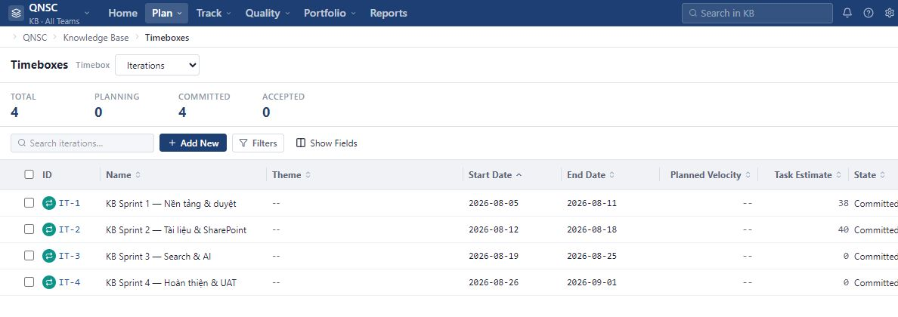
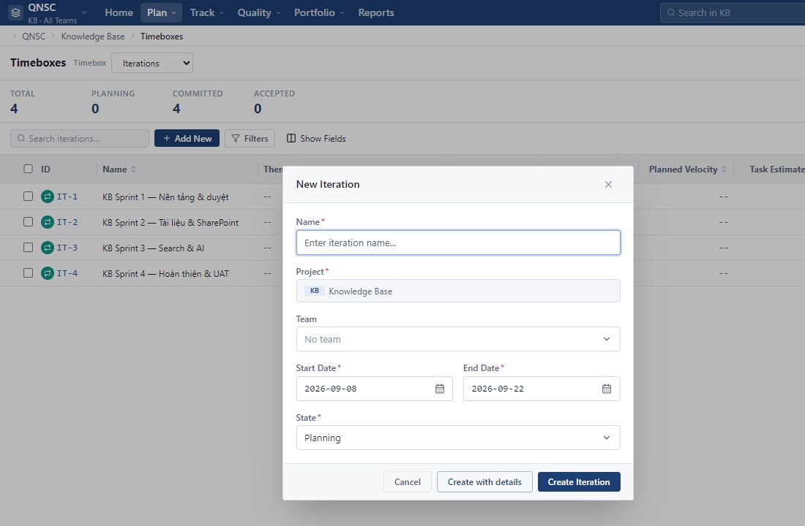

Select Timebox type
Use the list next to the title to switch between Iterations, Releases and Milestones.
Iteration is a short cycle for the Team to execute a group of User Stories and Defects. Please create the correct Iteration Project, set Planned Velocity, then bring each Work Item from status Unscheduled into the appropriate cycle.
Enter Plan → Timeboxes and select Iterations to view the current Project cycles.

Use the list next to the title to switch between Iterations, Releases and Milestones.
Total is the total number; Planning, Committed and Accepted are the Iteration numbers for each state.
Use Search, Filters and Show Fields to narrow the list or select columns to read.
Select ID to view details. The main columns include start date, end date, Planned Velocity, Task Estimate and State.
Workspace Admin or Project Admin creates a cycle for the currently selected Project. Team can be left blank if Iteration is used at the Project level.

The project on the form is taken from the current context and cannot be edited directly. Change context first if Project is not correct.
Enter Plan → Timeboxes, select Iterations, then select Add New.
Enter Name; select Team if necessary; Select Start Date, End Date and State. The start date cannot be after the end date.
Create Iteration create quickly. Create with details creates and then opens the details page to add information.
Planned Velocity is the number of Team Points expected to complete in Iteration. This is a manually entered planning goal, not Task hours.
In Plan → Timeboxes → Iterations, select the Iteration ID. If you are creating a new one, select Create with details.
This field is in the zone Details on the right, with Start Date, End Date and State.
Use numbers from 0 or higher. Can be left blank if the Team has not finalized the plan; Do not enter Capacity or Task Estimate hours here.
Return to the Iterations list and confirm the value in the column Planned Velocity. When opening details, the Capacity area also displays this target.
A User Story or Defect can only belong to a maximum of one Iteration at a time.
From Plan → Backlog, select the ID of the User Story or Defect to be planned.
Open the list and select the appropriate Iteration in the same Project/Team.
Rova updates existing Work Items; do not create additional copies.
Item leaves the Unscheduled Backlog list and appears in Track → Iteration Status of the selected cycle.
Change the Iteration field on Work Item; Do not delete and recreate items.
Work Item leaves the old Iteration and appears in the new Iteration. The item's ID, content, and history are preserved.
Work Item is no longer part of Iteration and reappears in the unscheduled Backlog, if not covered by Search or Filters.
Please check the Backlog or Track → Iteration Status after changing to make sure the item is in the right place.
The status reflects the commitment level for the entire cycle, and does not change just because you add a Work Item.
Preparing scope, time and work. This is the normal initialization state.
Team has committed the cycle. Switch status manually; The scope can still be adjusted.
The cycle has been accepted. When Iteration contains Work Items and all US/DE are Accepted, Rova can update this status.
Check scope, permissions, and data before recreating an Iteration or Work Item.
Check the correct Project and permissions. Iteration creation and management function for Workspace Admin or Project Admin.
Check the current Project and Team of the Work Item. List only outputs Iterations that match the scope.
Check Name, Start Date, End Date and State; Make sure the start date is not later than the end date.
This is a normal result after assigning Iteration. Open Track → Iteration Status to find in the corresponding cycle.
Iteration and Work Item may be different from Project or Team. Correct the scope accordingly and try again.
Check whether you are reading Iteration State or Work Item status. Assigning additional items does not automatically convert Iteration to Committed.
This is the plan value entered manually. Open Iteration Detail and update again if Team changes goals; Don't use hourly Task Estimate instead.